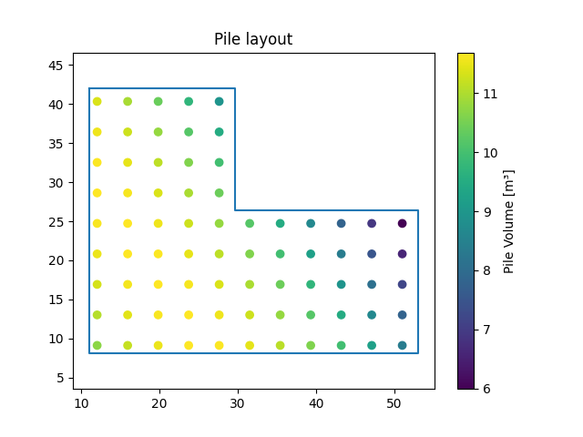

This report is created to demonstrate the use of visual progamming languages in geotechnical engineering. The chosen example is a pile foundation, which is created parametrically. This report is created from a python node within Autodesk Dynamo. The report is written in HTML. It is instantly updated, when inputs and therefore its content, are changed.
The design consists of 75 piles. The total volume of the piles is 776.44 cubic meters. The slab on top of the piles has the area of 1058.76 square meters.